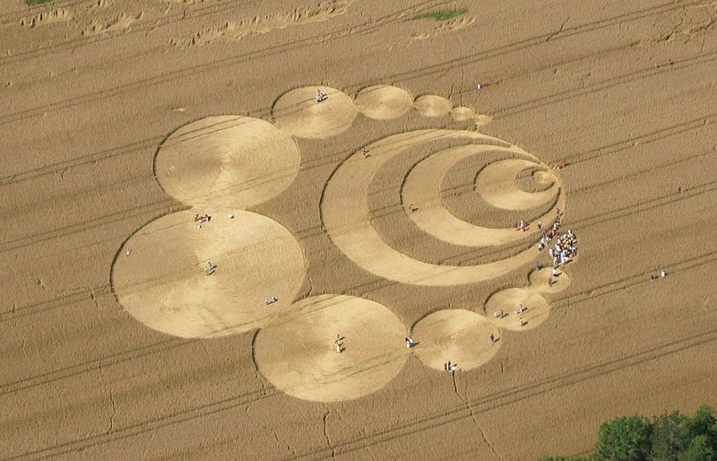
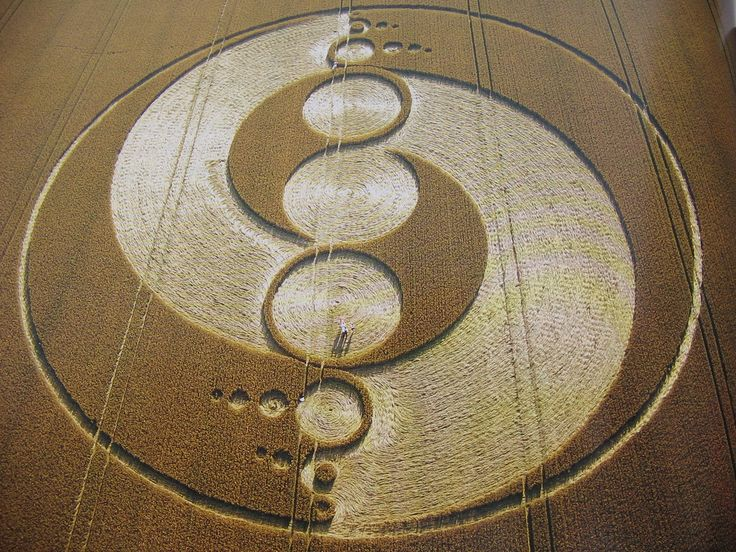
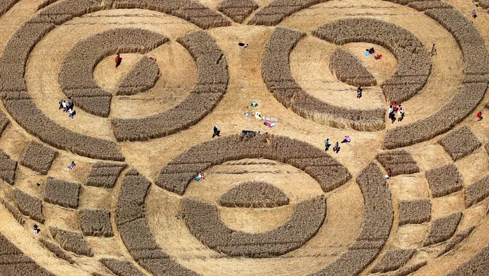

THE SIGNALS
Welcome, truth-seekers, to the heart of the enigma! You’ve entered the domain of the unknown, the unexplained, the UNIMAGINABLE. Prepare your minds to be blown wide open as we delve into the mystifying world of CROP CIRCLES and the ALIENS that make them.
Strap in, because this is no ordinary ride; this is a journey to the outer limits of reality, where the fabric of our understanding unravels, and the truth is stranger than fiction.
THE PHENOMENON UNVEILED

Massive, geometrical, elaborate, controversial... these words barely scratch the surface of the enigmatic phenomena known as CROP CIRCLES. These bizarre, intricate designs imprinted into vast crop fields are no mere accidents. They range from simple circles to complex, otherworldly pictograms stretching thousands of feet across, covering acres of land with their cryptic beauty. Are these the doodles of a bored alien race, some kind of interstellar graffiti tagging our planet as their own? Or is there something more going on? Some kind of message that they want us to know? Some kind of message that we FAIL to understand over and over again?
SIGNS FROM BEYOND!
Skeptics will have you believe that CROP CIRCLES are nothing more than elaborate hoaxes, the work of pranksters with planks and ropes. But OPEN your EYES! The precision, the complexity, the energy fields left behind—these are not the work of mere mortals. The stalks are bent, not broken, woven together with a precision that defies our rudimentary tools. It must be that these astonishing formations are messages from extraterrestrial beings! Are they trying to communicate with us, guiding us, warning us? Or perhaps, they're laughing at our primitive attempts to decode their cosmic jokes!
THE GOVERNMENT KNOWS
Why, you might ask, would anyone cover up such a monumental discovery? The answer, my friends, lies in control. Governments and shadowy organizations are desperate to keep us in the dark, to maintain their power over us. They dismiss these crop circles as mere pranks to keep us from seeing the bigger picture. They know the truth, and they are terrified of what will happen when we finally connect the dots. They fear the awakening of humanity, the dawn of a new era of enlightenment. They fear losing their grip on our minds!
Just THINK about it. With all of these visitors you'd figure that one of those fancy listening stations must have picked up SOMETHING right? They tell us that it's to watch out for the RED danger, but how long has that shit been going on? HOW LONG WILL YOU BELIEVE?
There is only one question to ask; What are they hiding in those listening posts
THE ANCIENT CONNECTION
Crop circles are not a new phenomenon. They've been documented throughout history, from ancient petroglyphs to medieval manuscripts. Our ancestors knew they were significant. They revered these symbols, understanding that they were messages from the gods or visitors from the stars. Are we so arrogant to dismiss what our ancestors accepted as divine truth? The patterns often align with sacred geometry, echoing the designs found in ancient temples and pyramids. This is not a modern hoax; this is a timeless message!
So next time someone tells you that the circles are just a hoax, there can be only one counter question; Do you believe in immortal pranksters that have been making these circles for the past FOUR THOUSAND YEARS?
AN OPEN MIND
Whether you believe in UFOs, extraterrestrials, or find solace in the comfort of conventional explanations, one fact remains undeniable: CROP CIRCLES are REAL! They appear with stunning regularity, transforming ordinary fields of corn and grain into canvases of extraordinary (and I dare SAY it: EXTRATERESTIAL) art. To dismiss them as mere pranks is to ignore the overwhelming evidence and the chilling testimonials of those who have witnessed their creation. Eyewitnesses speak of mysterious lights, strange sounds, and the eerie feeling of being watched. These are not the ravings of lunatics; these are the accounts of BRAVE souls who dared to look beyond the VEIL.
THE FINAL FRONTIER
So, dear readers, keep your eyes on the fields, for the truth is out there, imprinted in the crops, waiting to be decoded. Stay vigilant, stay curious, and most importantly, stay open to the SIGNALS FROM THE EDGE. The answers are within our grasp if only we dare to reach out and seize them. The universe is calling out to us, beckoning us to join the cosmic dance. Will you heed the call, or will you remain in the darkness of ignorance?
THE AWAKENING
Join us as we unravel the greatest mystery of our time. Share your stories by clicking here, your theories, your experiences. Together, we will uncover the truth that has been hidden for far too long. The time of awakening is upon us, and the crop circles are the harbingers of a new dawn. Embrace the mystery, for it is within the unknown that we find our true selves.